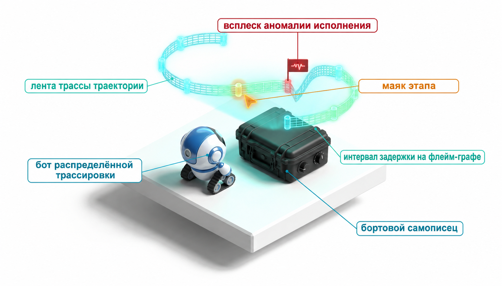
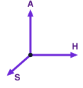
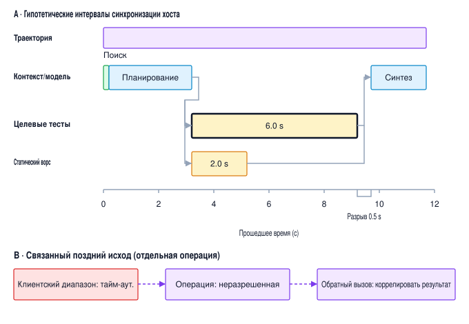
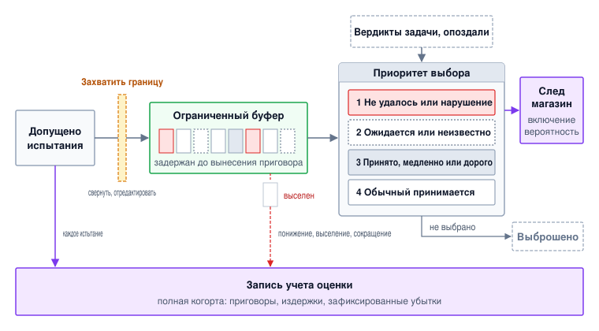
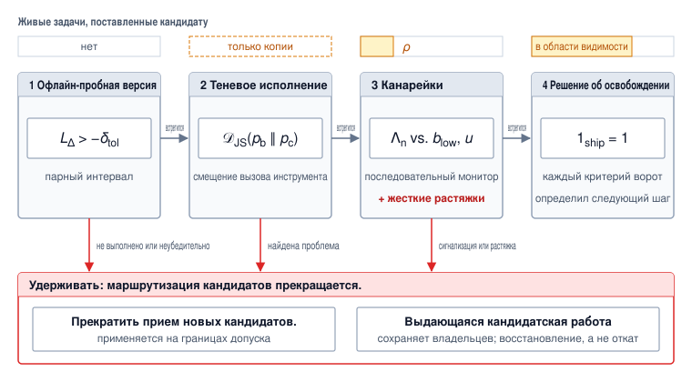
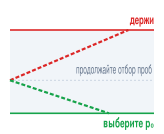

Содержание главы
Содержание
- 14 Эксплуатация агентов
- 14.1 От офлайн-вердикта к живой эксплуатации
- 14.2 Распределённая трассировка траекторий
- 14.3 Хранение трассировок и приватность
- 14.4 Разбор инцидентов (postmortems)
- 14.5 Поэтапные релизы
- 14.6 Решение о выпуске
- 14.7 Заблуждения и ловушки
- 14.8 Итоги
- 14.9 Историческая перспектива и дополнительное чтение
- 14.10 Упражнения
14 Эксплуатация агентов

Назначение
Зачем конфигурации, прошедшей офлайн-оценивание, нужны свидетельства, собранные во время её работы?
Офлайн-оценивание заранее выбирает задачи, фикстуры и грейдеры, а живой трафик не соблюдает ни одного из этих решений. Продакшен приносит входные данные, которых не предвидела ни одна фикстура, зависимости, замедляющиеся под нагрузкой, и результаты инструментов, оборванные без предупреждения, — при этом каждая принятая задача действует с реальными полномочиями. Когда доля принятых задач падает, счётчик говорит лишь о том, что что-то не сработало, но не где, потому что один проб раскладывает вызовы модели, исполнения инструментов и проверки по процессам и хостам. Найти причину позволяет запись каждого проба, но хранить все записи слишком дорого и небезопасно для приватных данных, а случайная выборка записей отбрасывает именно те редкие сбои, которые инженерам нужнее всего. Сбой, повторившийся десять раз при одном проценте выборки, девять раз из десяти не оставит подробной записи. Даже сохранённая запись показывает лишь то, что произошло. Она может показать, что наблюдение было усечено и что среда исполнения отказала действию, но вопрос, привело бы полное наблюдение к принятому исправлению, может ответить только контролируемый перезапуск из сохранённого состояния. Выпуск изменения поднимает собственные вопросы. Маленькая канарейка не делает регрессию дешевле в обнаружении: монитору нужно одно и то же число задач при любой доле трафика; канарейка ограничивает лишь вред от проблем, которые монитор не измеряет. Откат останавливает новую работу, но не отзывает уже отправленные запросы и не восстанавливает уже изменённые файлы. Эксплуатация агента, следовательно, означает заранее решить, что записывать, как проверять объяснение, сколько живой работы выставлять наружу и что должен показать релиз, прежде чем расширять его, — и затем зафиксировать, что остаётся неизвестным. Каждый вид экспозиции, который несёт агент, попадает в продакшен одновременно: состояние, которое оставляет после себя сбой, горизонт, на котором копится вред, пока монитор не примет решение, и полномочия, чьи последствия переживают откат.
Цели обучения
- Объяснить, почему диагностический трейс, надёжный журнал восстановления и учётная запись дают разные гарантии
- Проанализировать критический путь трейса, чтобы распределить затраченное время между перекрывающимися спанами
- Спроектировать удержание трейсов с учётом вердикта, сохраняющее редкие сбои в рамках бюджетов хранения и приватности
- Диагностировать сбой агента с помощью контролируемого вмешательства, формулируя, что результат устанавливает, а что нет
- Спроектировать поэтапные релизы, в которых экспозиция канарейки масштабируется последовательными правилами остановки и независимыми жёсткими tripwire
- Оценить интегрированную запись свидетельств по объявленному конъюнктивному релизному гейту
14.1 От офлайн-вердикта к живой эксплуатации
Офлайн-сравнение candidate_v2 с baseline_v1 завершилось без решения в какую-либо сторону. Кандидат принял больше парных задач, но его парный интервал не исключает потерь, превышающих объявленный допуск, и взвешенная по мощности продолжающая выборка ещё только предстоит спланировать. Этот вердикт касается конфигурации на выборочной популяции задач. Он ничего не говорит о том, почему конкретный проб не сработал, и ничего — о том, что конфигурация делает, когда начинает действовать на живой работе, где входы — не фикстуры, зависимости общие, а каждая принятая задача задействует реальные полномочия.
↩︎ Парное сравнение, оставляющее candidate_v2 неубедительным относительно его порога нехудшести, установлено в Сравнение парных исходов.

Эксплуатация конфигурации несёт все виды экспозиции одновременно: состояние, которое оставляет сбой, горизонт до решения монитора и полномочия, которые откат не может отозвать.
Ремонтный агент (Четыре маяка — рабочие нагрузки) даёт этой главе её кейс. Один проб candidate_v2 на ремонте пула соединений терпит неудачу после того, как инструмент поиска возвращает незаметно усечённый результат, а следующий ответ модели предлагает переписать файл вне разрешённого объёма ремонта, что среда исполнения отказывает до отправки. Агрегированные счётчики фиксируют сбой; они не могут сказать, кто виноват — модель, адаптер наблюдений, медленная зависимость или среда исполнения, — и изменило бы исход починка одного из них. Ответить на эти вопросы позволяют свидетельства, которые офлайн-каркас никогда не собирал, — собранные во время работы системы и хранимые достаточно долго, чтобы их можно было изучить.
Четыре вида эксплуатационных свидетельств заполняют этот пробел, и у каждого свои ограничения. Трейс привязывает каждый вызов модели, исполнение инструмента и проверку к своему пробу, чтобы задержку или сбой можно было атрибутировать вдоль критического пути траектории (Глава 14.2). Политика удержания решает, какие трейсы переживут бюджеты хранения и приватности, а учётная запись сохраняет знаменатель оценивания полным, когда диагностические подробности сэмплируются (Глава 14.3). Постмортем инцидента превращает наблюдаемое расхождение в гипотезу и проверяет её вмешательством на сохранённом префиксе записанной траектории, поскольку никакое перечитывание исторической телеметрии не ответит на контрфактический вопрос (Глава 14.4). Поэтапный релиз затем выставляет пересмотренную конфигурацию на живую работу лишь настолько быстро, насколько позволяют последовательные свидетельства и жёсткие tripwire, потому что откат останавливает новый приём задач, но ничего не решает по уже сделанному (Глава 14.5). Глава завершается соединением этих записей с офлайн-сравнением в единую запись решения и объявленное релизное правило (Глава 14.6), начиная с трейса, который объясняет, на что потратил время проб с усечённым наблюдением.
14.2 Распределённая трассировка траекторий
Когда проб candidate_v2 на ремонте пула соединений срывается или зависает, агрегированные сводные метрики фиксируют только полное время по стенному часовому и итоговый вердикт, смешивая задержки удалённого инференса, блокировки тестовых контейнеров и искажённые или усечённые выходы инструментов в одно недифференцированное число. Трейс разделяет эти возможности, привязывая каждое взаимодействие к конкретному пробу оценивания, ревизии кандидата и операции среды исполнения, заменяя разрозненные журналы сервисов сквозной причинной записью.
Распределённая трассировка отслеживает единицы работы через процессные и сетевые границы — операционную модель, выработанную в продакшен-масштабе системой Dapper (Sigelman и др. 2010 г.). В ядре этой модели спан представляет единичный непрерывный блок исполнения, определяемый уникальным идентификатором, явными метками начала и конца, структурированными атрибутами и опциональными событиями с отметками времени. Иерархические связи родитель–потомок отражают синхронную вложенность, тогда как связи трейсов коррелируют развязанные асинхронные взаимодействия, лежащие вне одного дерева вызовов, следуя стандартной модели OpenTelemetry (OpenTelemetry Authors 2026 г.). Внутри агентной траектории шаг генерации большой языковой модели (LLM), опосредованное исполнение инструмента в песочнице и последующая валидация результата образуют отдельные спаны. Пропуск инструментирования на любой из этих границ оставляет незамеченные пустоты, скрывающие, возникла ли неожиданная задержка в инференсе модели, в накладных расходах на очередь или в подготовке окружения.
14.2.1 Диагностический захват и история восстановления
Во время ремонта пула соединений каждый вызов модели и вызов инструмента в песочнице порождает и надёжную журнальную запись, и диагностический спан трейса, часто с одним и тем же идентификатором операции. Считать эти два потока взаимозаменяемыми — опасный эксплуатационный приём «сойдёт и так». Если исполнительный движок полагается на свой конвейер диагностической трассировки, чтобы восстановить состояние после падения воркера, единичное событие сброса нагрузки, потерявшее спаны или усечённое большие полезные нагрузки инструментов, испортит восстановление. Разделение пути восстановления и пути наблюдаемости гарантирует, что обратное давление телеметрии никогда не поставит под угрозу надёжность исполнения.
Системный взгляд 14.1: История восстановления и диагностические трейсы
↩︎ Надёжный журнал траектории, из которого восстановление реконструирует состояние исполнения, установлен в Журнал как записанное свидетельство.
Инженеры систем обязаны поддерживать это различие, когда отслеживают асинхронные операции, такие как тестовый прогон на ws_r18, который восстановление оставило неразрешённым до начала оценивания. Когда HTTP-клиент, наблюдающий за этой песочницей, истекает по таймауту и завершает свой диагностический спан, сам тест не исчезает. Работа продолжает исполняться внутри контейнера, пока песочница не отправит аутентифицированный обратный вызов с результатами теста, который таблица операций записывает против исходной операции, пока траектория остаётся на паузе. Распределённый трейс отражает это расщеплённое исполнение, не перезапуская тест и не возобновляя модель преждевременно. Он коррелирует поздний обратный вызов с исходной попыткой отправки через связь трейсов, сохраняющую и таймаут на стороне клиента, и истинное время исполнения на стороне сервера.
Захваченное содержимое требует столь же строгой границы. Каркас оценивания должен различать, что предложил агент, что модифицировало промежуточное ПО и что реально получила модель. Манифест доставленных входов записывает точную байтовую последовательность, поданную в контекстное окно модели, которая часто расходится с сырым выходом инструмента из-за шаблонизации промптов, усечения по токенному бюджету или сжатия контекста. Криптографические хэши проверяют целостность полезных нагрузок против исторических записей, но дайджест не может реконструировать байты, опущенные или вычищенные из хранилища. Поэтому для точного детерминированного воспроизведения и форензики требуется сохранять манифесты доставленных входов и сырые наблюдения в хранилище с адресацией по содержимому рядом с метаданными трейса.
14.2.2 Поля свидетельств трейса
Сохранение манифестов входов и записей спанов мало помогает, если каждый сервис пишет нестандартизированные телеметрические теги, опускающие, какой проб, ревизия кандидата, транспортная попытка или политика усечения породили наблюдение. Каркасу оценивания вместо этого нужна дисциплинированная минимальная схема, связывающая экспериментальные параметры напрямую с наблюдениями среды исполнения и сети. Таблица 1 организует существенные поля в пять функциональных категорий. Имена атрибутов могут следовать стандарту вроде семантических соглашений OpenTelemetry; пять групп — минимальная информация, необходимая для диагностики поведения агента.
| Группа записи | Сохраняемая информация | На какой вопрос отвечает |
|---|---|---|
| Идентичность оценивания | Идентичность задачи, идентичность проба, версии фикстуры и критерия, конфигурация системы, ревизия артефакта кандидата | К какому эксперименту и кандидату относится это наблюдение? |
| Наблюдаемая работа | Идентичности трейса и спана, вид операции, производитель, границы начала/конца, часовой домен, связи родительства или зависимостей | Какая работа наблюдалась, где и в отношении какой другой работы? |
| Приём и попытка | Идентичность вызова модели или логической операции, транспортная попытка, применимые ссылки на решения и политики | Было ли это предложение удержано или принято, и какая попытка породила свидетельство? |
| Исход и потребление | Статус и источник ответа, охват свидетельства, наблюдаемое потребление токенов/инструментов, неразрешённая ответственность, ссылка на вердикт задачи | Что известно об операции, её издержках и отдельном решении о принятии? |
| Ограничения захвата | Ссылки на доставленные входы и наблюдения, опущенные диапазоны или байты, версия инструментирования, известные потери, классификация удержания/доступа | Что может изучить исследователь и что эта запись оставляет недоступным? |
Эта схема проносит различения задачи, проба, конфигурации и артефакта из записи о принятии в каждое наблюдаемое взаимодействие, ограничивая провенанс провайдера тем, что раскрывает удалённый интерфейс. При трассировке оценивания статус спана должен оставаться развязанным с итоговым вердиктом задачи. Процесс операционной системы, запускающий тестовый набор, может завершиться с кодом 0, из-за чего слой трассировки пометит спан успешным, хотя вывод теста показывает, что кандидат провалил критические проверки. Напротив, клиентский спан может завершиться ошибкой таймаута при получении вспомогательной документации, и всё же кандидатный агент может собрать валидный патч из кэшированного контекста. Авторитетное решение о принятии задачи опирается на независимые верификационные наборы и часто приходит задолго после закрытия исполнительных спанов агента.
Распространение контекста через архитектурные границы — API-шлюз, асинхронную очередь или изолированную песочницу воркера — требует стандартизированных носителей метаданных. Спецификация W3C Trace Context (W3C Distributed Tracing Working Group 2021 г.) предоставляет стандартные HTTP-заголовки и заголовки сообщений для распространения корреляционных идентификаторов между распределёнными компонентами. Однако идентификаторы трейсов устанавливают корреляцию, а не авторизацию. Песочница воркера, получившая идентификатор трейса, не может считать его токеном допуска, как и агент не может обходить политики безопасности, внедряя произвольные родительские заголовки. Контроль допуска, валидация учётных данных и санитизация полезных нагрузок остаются исключительной ответственностью хоста среды исполнения. Кроме того, заголовки трейсов никогда не должны переносить чувствительные токены промптов, учётные данные или проприетарные данные задач через недоверенные сетевые границы. Когда black-box-инструменты или легаси-бинарники не могут излучать внутренние спаны, оркестратор должен записывать наблюдаемые хостом границы, явно помечая спан как внешнее измерение отправка–ответ, а не как внутренний трейс исполнения.
14.2.3 Перекрытие спанов и атрибуция задержки
Суммировать длительности спанов, чтобы получить общее время исполнения агента, — распространённая ошибка анализа телеметрии. Поскольку родительский спан охватывает времена жизни потомков, сложение длительностей родителя и потомка считает работу дважды. Более того, когда оркестратор агента запускает несколько вызовов инструментов конкурентно, например статический линтер вместе с прицельным тестовым набором, их дочерние спаны перекрываются на шкале времени. Порядок исполнения следует строго из зависимостей завершения, но не из одной лишь иерархии родитель–потомок. Сравнение длительностей, измеренных на одном монотонном часовом, просто; корреляция меток времени между распределёнными хостами воркеров требует явной модели выравнивания.1 Без синхронизированных источников времени или моделирования сдвига часов видимое перекрытие спанов между разными машинами может отражать не что иное, как физическое расхождение часов. Границы инструментирования привносят схожие проблемы атрибуции. Наблюдаемая клиентом задержка модели включает TCP-рукопожатия, согласование TLS, задержку в очереди на шлюзе инференса и сетевую передачу, поэтому время до первого токена — никогда не изолированное измерение предвычислений модели.
Чтобы квантифицировать, где оптимизации задержки дают настоящую экономию стеннного времени, инженеры систем измеряют критический путь через граф зависимостей траектории — самую длинную цепочку зависимых операций, записанную в трейсе.2 Последовательные операции складывают свои длительности напрямую, тогда как конкурентные ветки, сходящиеся в общем барьере синхронизации, вносят только длительность самой медленной ветки. Укорачивание ветки вне критического пути оставляет затраченное время неизменным, а укорачивание ветки на нём помогает лишь до тех пор, пока её место не займёт следующая по длине ветка (ноутбук 14.1).
↪ Ускорение окупается временем, которое оно высвобождает на этом критическом пути; этот компромисс рассматривается в Задержка критического пути.
Гипотетические интервалы, использованные в ноутбуке 14.1, разделяют единые часы хоста. Рисунок 1 располагает их на общей оси, чтобы параллельные проверки, их соединение и неучтённый интервал оставались видимыми вместе.

Соединение не позволяет более быстрой lint-проверке сократить этот сегмент, пока тесты остаются более длинной ветвью. Более позднее начало синтеза также оставляет промежуток, который эти спаны не объясняют. Ни вложенность, ни успешный колбэк не дают отдельного свидетельства, требуемого для принятия задачи.
Инженерный расчёт 14.1: Наблюдаемое время и критический путь
Допущения: Таблица 2 даёт наблюдения из отдельного гипотетического замера времени, инспектирующего ws_r19. Модель сначала предлагает проверки, среда исполнения допускает две независимые read-only проверки, а синтез ждёт обеих. Все интервалы используют одни часы хоста, никакая скрытая зависимость не задерживает старт ни одной из проверок, а допуску не требуется отдельного времени. Охватывающий сегмент тянется от диспетчеризации получения контекста до финального ответа.
| Наблюдаемый спан | Интервал от начала сегмента (с) | Требуемый предшественник |
|---|---|---|
| Получение вспомогательного контекста | [0, 0.2] | Начало сегмента |
| Вызов модели, предлагающий проверки | [0.2, 3.2] | Ответ получения контекста |
| Прицельные тесты | [3.2, 9.2] | Валидированное и допущенное предложение проверок |
| Статическая lint-проверка | [3.2, 5.2] | То же предложение; независимо от прицельных тестов |
| Вызов модели, синтезирующий отчёт | [9.7, 11.7] | Оба ответа проверок |
Математика: Сумма всех листовых длительностей даёт 13.2 s — завышенную оценку, дважды учитывающую параллельное исполнение в фазе валидации. Путь через получение контекста, планирование, более длинную проверку (прицельные тесты) и синтез, где перекрывающиеся проверки считаются один раз, объясняет 11.2 s. Оставшиеся 0.5 s приходятся на промежуток между завершением самой медленной проверки и диспетчеризацией финального вызова синтеза. Поскольку трассировка не имеет инструментирования для промежуточной бухгалтерии среды исполнения, сериализации промпта или сверки контекста, эта длительность остаётся без атрибуции. Неизмеренный интервал указывает границу, где инструментирование нужно уточнить, а не свидетельство простоя исполнителя.
Вмешательство: Пусть оптимизация ускоряет набор прицельных тестов с 6.0 с до 1 s, при этом все остальные компоненты остаются неизменными. Поскольку статическая lint-проверка занимает 2.0 с, lint заменяет набор тестов в роли узкого места параллельной ветви. Пересчёт критического пути даёт 7.7 s для всего сегмента, что даёт общее сокращение истёкшего времени на 4 s.
Системный вывод: Оптимизация производительности на параллельной ветви исполнения даёт выигрыш по астрономическому времени лишь до величины разрыва до следующей по длине параллельной траектории. Ускорение набора тестов на 5 s даёт лишь 4 s сквозной экономии, потому что статический lint немедленно становится новым ограничителем критического пути. Системным архитекторам следует пересчитывать критический путь по всему графу зависимостей, прежде чем оценивать ценность оптимизации. Кроме того, теоретические ускорения всегда нужно проверять эмпирически в контролируемых испытаниях: реальные оптимизации могут сдвинуть конкуренцию за ресурсы, изменить локальность кэша, изменить давление сборщика мусора или вызвать иную длину генерации токенов у модели.
Контрольная точка 14.1: Интерпретируйте свидетельства трассировки
Распределённая трассировка траекторий даёт причинную основу, необходимую для диагностики того, почему агент преуспел, потерпел неудачу или застрял. Однако сбор детальной телеметрии влечёт конкретные инженерные издержки в накладных расходах CPU, пропускной способности сети и постоянном хранилище. В высокопроизводительных каркасах оценки сохранение каждого токена, полезной нагрузки инструмента и внутреннего спана на тысячах бенчмарк-испытаний редко осуществимо. Определить, что измерять, — лишь первая половина проблемы наблюдаемости; вторая половина — установить политики захвата и хранения, которые сохраняют критические свидетельства отказов, не перегружая телеметрическую инфраструктуру.
14.3 Хранение трассировок и приватность
Если отложенный регрессионный набор для испытания, породившего ws_r19, падает спустя часы после завершения исполнения, это испытание внезапно становится диагностически незаменимым. К тому времени его процесс исполнения уже завершён, а спаны модели и инструментов закрыты. Судебная ценность прогона целиком зависит от того, что телеметрическая система решила сохранить. Поэтому хранение трассировок требует интеграции с финальными вердиктами по задачам и сроками их поступления, а не опоры исключительно на коды выхода процессов или маркеры завершения спанов. Поскольку хранение исчерпывающих историй исполнения быстро наращивает расходы на хранилище и расширяет экспозицию чувствительных данных, проектировщики систем должны определить, какие свидетельства требует каждая цель оценки и какие диагностические гарантии остаются возможными при ограниченных бюджетах захвата.
14.3.1 Учётные записи и головная выборка
Если телеметрический конвейер сэмплирует регистрации испытаний с той же частотой, что и тела диагностических спанов, любое испытание, которое упало по тайм-ауту, уронило исполнителя или потеряло свои спаны, исчезает из знаменателя оценки, смещая доли прохождений в сторону быстрых и лёгких прогонов. Помимо истории восстановления и диагностических трассировок, разделённых в перспективе 14.1, оценке требуется третий артефакт: учётная запись. Эта запись каталогизирует каждое допущенное испытание, его точную конфигурацию окружения, критерии оценки, текущий статус вердикта, измеренные затраты ресурсов и маркеры отсутствующей телеметрии. Хотя эти три записи могут находиться на общем физическом хранилище, политики сэмплирования должны применяться исключительно к диагностической детализации. Телеметрические системы никогда не должны сэмплировать историю восстановления или знаменатель оценки.
Диагностическая детализация также растёт значительно быстрее самой траектории, когда спаны зеркалируют сырую историю сообщений. Если каждый спан вызова модели реплицирует весь контекст диалога, отправленный провайдеру, объём диагностических трассировок наследует квадратичный паттерн повторной отправки, формализованный в Уравнение (9). Телеметрические системы избегают этого разрастания, ссылаясь на неизменяемые префиксы диалога через криптографические дайджесты содержимого и сохраняя каждое новое наблюдение инструмента ровно один раз. Такая контентно-адресуемая дедупликация удерживает рост хранилища линейным по числу ходов — при условии, что blob-хранилище сохраняет упомянутый содержимое в течение жизни трассировки.
Головная выборка решает, сохранять ли детальные диагностические трассировки, в начальной точке исполнения. Случайный отбор с записанными вероятностями включения позволяет инженерам вычислять несмещённые оценки по совокупности для метрик вроде средней задержки или суммарного потребления токенов. Однако равномерная головная выборка плохо справляется с редкими режимами отказов: перемежающийся дефект легко проскакивает, не оставив ни одной сохранённой трассировки.
Поскольку головная выборка решает вопрос хранения до того, как станут известны исходы исполнения, каждое возникновение режима отказа сохраняется независимо с вероятностью выборки
Чтобы перехватывать такие ускользающие события, не сохраняя каждое рутинное исполнение, хвостовая выборка откладывает решение о хранении до накопления операционных свидетельств ниже по конвейеру — например, проваленного проверочного утверждения, необработанного исключения инструмента, неожиданного вмешательства человека или аномального всплеска задержки. Хвостовой отбор сознательно концентрирует диагностическое хранилище на ценных и проблемных прогонах, порождая коллекцию трассировок, намеренно нерепрезентативную для обычного производственного трафика. Поэтому инженеры должны вычислять частоты отказов по совокупности из полной учётной записи, а не из хвостовой коллекции трассировок. Всякий раз, когда команды выводят статистические оценки из сэмплированных записей, телеметрическая инфраструктура должна записывать точные вероятности включения рядом с версией действующей политики отбора.3 Диагностическим процессам также нужна база для сравнения. Конвейер должен сохранять известную случайную выборку обычных принятых испытаний в качестве контрольной группы, поскольку изолированная трассировка отказа не может показать, какие промежуточные шаги были аномальными, а какие — рутинными.
14.3.2 Хвостовая выборка и окна вердиктов
Если буфер хвостовой выборки вытесняет тела трассировок до того, как медленный регрессионный набор завершит оценку ws_r19, учётная запись регистрирует поздний отказ, а спаны, нужные для его объяснения, уже утрачены. Поскольку хвостовой отбор охватывает несколько операционных этапов, трассировка исполнения временно удерживается в промежуточном буфере, пока выполняются проверочные проверки, и получает финальную классификацию хранения только тогда, когда в пределах объявленного окна вердиктов поступают убедительные оценочные свидетельства. Когда промежуточный буфер истекает до сообщения об асинхронном отказе, учётная запись должна явно пометить недостающую диагностическую детализацию, чтобы целостность аудита сохранялась. Таблица 3 излагает эту многоуровневую политику хранения, устанавливая строгий порядок приоритетов, чтобы перекрывающиеся правила классификации не считали и не сохраняли одну трассировку многократно.
| Свидетельство на границе решения | Возможная политика для детальной трассировки | Что записать в ограничение |
|---|---|---|
| Проваленный критерий задачи или нарушение принудительной политики | Дать высокий приоритет хранения, вместе с критерием и подтверждающими свидетельствами | Ошибка процесса не доказывает сама по себе провал всей задачи, а насыщение буфера всё же может заставить вытеснить трассировку |
| Ожидающий или неизвестный вердикт по задаче | Хранить временно или по явной выборке неразрешённых случаев | Указать срок, недостающее свидетельство и что происходит при истечении окна |
| Принятое, но необычно медленное, дорогое или требующее вмешательства испытание | Хранить по объявленным диагностическим порогам | Отбор обогащает эти поведения и не устанавливает их частоту в совокупности |
| Обычное принятое испытание | Хранить известную случайную контрольную выборку | Сохранить вероятность включения и отличать несэмплированное от утраченного |
Приоритет вытеснения: когда кольцевые буферы испытывают нехватку памяти, политики вытеснения должны сбрасывать рутинные успешные и неклассифицированные трассы раньше, чем запуски, помеченные из-за нарушений политики или проваленных проверок. Хотя дифференцированный приоритет вытеснения заметно улучшает выживаемость диагностических данных, экстремальный пиковый трафик всё же может привести к потере трасс.
Физические пределы буферов неизбежно управляют этой архитектурой. Менеджеры буферов должны соблюдать четыре одновременных ограничения: число активных трасс, суммарный объём в байтах, лимит размера отдельной трассы и максимальный возраст в промежуточном хранении. Размер, вычисленный из средних величин — например, среднее число одновременных трасс, умноженное на средний размер трассы, — частая инженерная ловушка: каскадные отказы обычно порождают всплески необычно длинных, насыщенных инструментами траекторий, которые быстро исчерпывают память буфера. Телеметрические системы должны экспонировать метрики в реальном времени для записей, сброшенных с головы, вытеснений из буфера и усечений спанов с разбивкой по когортам и классам селекции. Без этой наблюдаемости коррелированная потеря во время инцидентов будет незаметно удалять именно те трассы отказов, которые нужны инженерам для диагностики простоев системы. Кроме того, хотя отложенная хвостовая селекция ограничивает долгосрочное downstream-хранилище, она не сокращает сетевой входной трафик и память, необходимые для буферизации трасс до селекции, и строгие ограничения приватности распространяются и на эти буферы промежуточного хранения. Поэтому учётная запись находится вне буфера (Рисунок 2). Каждая принятая проба попадает в неё напрямую — вместе с каждой записанной потерей, вытеснением и усечением, — так что знаменатель переживает всё, что теряет буфер.

Инженерный расчёт 14.2: Что экономит селекция с учётом вердикта
Допущения: каждый час приносит 10,000 проб с одинаковыми разрешёнными телами трасс размером 1.4 MB. На границе селекции 400 провалили критерии, 100 остаются в ожидании или неизвестны, а 9,500 — обычные принятые пробы. Эти классы не пересекаются, повторяются в течение 24 часов, и все переживают сбор. Головная селекция выбирает каждую пробу с вероятностью 5 percent. Хвостовая селекция удерживает классы проваленных и неопределённых и независимо выбирает 2 percent обычных принятых проб.
Расчёт: удержание всех тел требует 336 GB за указанный период. Головная выборка удерживает ожидаемые 500 трасс в час, или 16.8 GB за указанный период. Она включает ожидаемые 20 проваленных и 5 неопределённых проб в час — это не гарантированные количества. Хвостовая селекция удерживает 400 проваленных, 100 неопределённых и ожидаемые 190 обычных принятых проб: 690 трасс в час и 23.184 GB за указанный период.
Результат: полное удержание использует примерно 14.5× байт downstream-хранилища по сравнению с хвостовой политикой. В этом сценарии хвостовая селекция расходует больше ёмкости, чем равномерная головная выборка, но гарантирует диагностическую видимость каждого проваленного и неопределённого исполнения, а не удерживает лишь непредсказуемую горстку аномальных запусков.
Системный вывод: удерживаемый объём определяется двумя слагаемыми. Первое — неэластичный минимальный объём хранилища, задаваемый долей «проваленные плюс неопределённые» (16.8 GB в день в этой нагрузке). Второе — регулируемая надбавка, определяемая долей контрольной выборки на рутинных успехах, где каждый процентный пункт контрольной выборки добавляет 3.2 GB в день. Планирование ёмкости должно закладывать базовый минимальный объём с запасом на повышенную долю отказов во время сбоев сервиса, одновременно подгоняя долю контрольной выборки под доступные бюджеты долгосрочного хранения. Эти расчёты отражают десятичные гигабайты для сырых тел трасс; метаданные индексации, факторы репликации, учётные записи и входные буферы добавляют дополнительный overhead.
14.3.3 Минимизация раскрытия
Сброс сырых промптов модели и неотредактированных ответов инструментов прямо в общий бэкенд трассировки превращает конвейер наблюдаемости во вторичный канал утечки данных, распространяя записи клиентов, ключи баз данных и фрагменты проприетарного исходного кода по поисковым индексам и журналам сбоев, куда ретроспективная очистка не доберётся. Диагностические расследования редко требуют полного поглощения сырых промптов и полных выводов инструментов; структурированные метаданные (типизированные коды возврата, версии схем, задержки суб-спанов, решения политик и хешированные указатели на артефакты) часто дают полный контекст для отладки без раскрытия чувствительных пользовательских данных. Даже когда учётные данные и API-токены аккуратно вычищены, аргументы и ответы инструментов часто содержат частные записи или персональные идентификаторы. Поэтому политики авторизации должны управлять конкретными атрибутами данных и ограничивать доступ по роли расследователя, а не предоставлять общий доступ на чтение ко всему телеметрическому ярусу. Минимизация данных должна выполняться на доверенной границе захвата внутри среды исполнения — до того, как неочищенные буферы попадут в сетевые очереди, демоны поглощения или системы оповещения.
Автоматическое редактирование снижает риски раскрытия, но проектировщики систем должны считать любой механизм очистки изначально ненадёжным. Регулярные выражения пропускают нестандартные или обфусцированные шаблоны секретов. Детекторы энтропии Шеннона помечают UUID и криптографические нонсы, но пропускают предсказуемые учётные данные. Модели распознавания именованных сущностей ошибаются: пропускают частные имена или удаляют валидный операционный синтаксис, нужный для диагностики ошибки инструмента. Поскольку эвристические санитайзеры не могут гарантировать нулевое раскрытие для произвольных полезных нагрузок, архитектурная схема должна ставить во главу угла структурное исключение полей, а не редактирование текста, чтобы ненужные поля вообще не захватывались. Для удерживаемых полей, подвергаемых преобразованиям, конвейеры должны проверять правила санитизации по курируемым наборам бенчмарков, содержащим реальные чувствительные шаблоны. Когда downstream-диагностика требует коррелировать несколько действий одной сущности, не раскрывая реальных личностей, телеметрические системы должны заменять идентификаторы ключированными криптографическими псевдонимами. Генерация таких псевдонимов через хеш-код аутентификации сообщений (HMAC) требует безопасно управляемого секретного ключа, а не публичной соли (Krawczyk и др. 1997 г., sec. 2). Однако инженеры должны понимать, что устойчивые псевдонимы сохраняют реляционную связуемость между трассами. Регулярная ротация ключей ограничивает продольную корреляцию между эпохами оценки ценой диагностик, которым нужно следовать за одной сущностью несколько недель. Псевдонимизация — не полная анонимизация, и она не оправдывает неопределённое удержание трасс.
14.3.4 Точность воспроизведения после редактирования
Удаление чувствительного столбца базы данных из ответа инструмента может скрыть точный дефект форматирования, вызвавший ошибку разбора у модели, а замена строки адреса на заполнитель или псевдоним может сместить границы суб-словных токенов и увести модель на совершенно другой путь декодирования при повторном исполнении. Поскольку очистка или маскирование входных токенов меняет точные байтовые последовательности, управлявшие поведением агента, санитизация создаёт внутреннее напряжение между обеспечением приватности и точностью воспроизведения: отредактированная трасса не может служить битово-точной заменой реальных взаимодействий со средой. Когда судебные расследования требуют точного воспроизведения и политики соответствия это позволяют, системы должны изолировать сырые полезные нагрузки исполнения в выделенном репозитории артефактов с ограниченным доступом, полностью отдельном от общей диагностической телеметрии. Диагностическая трасса тогда хранит только криптографические хеши, указывающие на эти защищённые блобы, вместе с метаданными, фиксирующими точный конвейер преобразований, использованный для получения очищенного представления. Когда сырые полезные нагрузки истекают по расписаниям удержания данных или не могут быть сохранены из-за ограничений приватности, команды обязаны формально сузить охват своих диагностических утверждений. Воспроизведение агента на синтетических мок-фикстурах подтверждает, что модель справляется с классом задач в новом прогоне, но не доказывает, что произошло в исходном производственном исполнении.
Контрольная точка 14.2: Удержанные свидетельства и обоснованные выводы
Бюджеты хранения определяют, какие наблюдения времени исполнения выживут, а политики приватности — какие сохранённые артефакты расследователь вправе легально изучать. Каждый разбор постмортема и каждый регрессионный бенчмарк работают в границах, заданных этими двумя ограничениями.
14.4 Разбор инцидентов (postmortems)
Когда удержание с учётом вердикта сохраняет проваленную пробу ремонта пула соединений candidate_v2 (Глава 14.1), удержанная трасса показывает ответ поиска, обрывающийся посреди фрагмента исходного кода без уведомления об усечении, хотя контракт ограниченных наблюдений требует его, — с последующим ответом модели, предлагающей заменить файл вне разрешённого охвата ремонта. Среда исполнения отклоняет это предложение до отправки. Хотя трасса исполнения указывает, где наблюдение было обрезано и где среда заблокировала недопустимую операцию, она не может показать, привело бы полное наблюдение к принятому ремонту. Разбор инцидента4 связывает такую телеметрию с проверяемым объяснением и локализованным корректирующим изменением.
↩︎ Контракт ограниченных наблюдений, при котором адаптер, обрезающий результат, должен сообщить об этом в типизированном уведомлении об усечении, установлен в Уведомления об усечении и дескрипторы инспекции.
Строгие постмортемы держат эти первичные находки строго разделёнными. Доставка фрагмента без метаданных об усечении демонстрирует дефект интерфейса. Выдача замены файла вне охвата показывает, как фундаментальная модель повела себя при голодании контекста. Перехват недопустимой записи подтверждает, что шлюз допуска сработал как задумано. Поскольку отказы в агентных системах обычно проистекают из наслаивающихся взаимодействий между подсистемами, преждевременное возложение вины на один компонент затемняет точные условия, которые должно разрешить инженерное исправление.
14.4.1 Реконструкция и воспроизведение
Перечитывание статичной трассы не может показать, отремонтировал бы candidate_v2 пул соединений при неусечённом результате поиска. Повторный запуск изменённого агента против записанных выводов инструментов без сопоставления запросов тоже может связать новые вызовы модели с устаревшими ответами среды. Три использования записанной траектории из устойчивого исполнения становятся тремя инструментами постмортема, каждый отвечает на отдельный диагностический вопрос:
- Воспроизведение с путешествием во времени сворачивает записанные решения из совместимой контрольной точки исполнения, чтобы восстановить точное состояние системы, видимое агенту в момент отказа.
- Регрессионное воспроизведение на каркасе исполняет детерминированный код компонентов против захваченных входов, отключая живые внешние побочные эффекты.
- Контрфактическая ветвь порождает исполнение из сохранённого префикса, изменяя конкретную переменную или контракт интерфейса и собирая свежие наблюдения вдоль расходящегося пути.
↩︎ Три использования записанной траектории и границы того, что показывает каждое, установлены в Проигрывание записанной траектории.
Воспроизведение с путешествием во времени только изучает прошлое, и ни один режим воспроизведения не может синтезировать незаписанный исторический исход. Демонстрация того, что пересмотренная процедура теперь проходит тесты, не меняет того, что исходная проба выдала, наблюдала или сделала. Кроме того, точность воспроизведения с путешествием во времени строго ограничена контрактом захвата, определённым в перспективе 14.1. Изучение выданного контекста показывает усечённый фрагмент, предъявленный модели. Просмотр отдельно сохранённого сырого stdout показывает, что отбросил адаптер. Изучение отредактированных журналов показывает только метаданные исполнения и статус верхнего уровня.
Регрессионное воспроизведение на каркасе особенно эффективно для изоляции преобразований данных без дорогих вызовов модели. Подача захваченных ответов инструментов на старый и пересмотренный адаптеры наблюдений при отключённых путях живых эффектов детерминированно подтверждает, что старый адаптер опустил требуемый маркер частичного результата, а пересмотренный корректно его добавляет. Однако этот офлайн-тест каркаса не может предсказать, как модель ответит на пересмотренную оболочку наблюдений. Ответ на этот вопрос требует живого эксперимента. Любое изменение текста промпта, температуры сэмплирования, конфигурации модели или форматов наблюдений инструмента — это вмешательство, а не пассивное воспроизведение. Записанные downstream-ответы остаются пригодными для повторного использования только при правиле сопоставления запросов из Герметичные оценочные залы; сопоставление лишь по именам инструментов рискует сфабриковать искусственные успехи, связывая новые действия модели с устаревшими ответами среды.
14.4.2 Атрибуция неисправностей
Возлагать вину на модель за предложение выходящей за рамки задачи правки файла или доверять собственному ретроспективному объяснению модели того, почему она потерпела неудачу, — значит путать нижестоящий симптом с вышестоящим дефектом усечения, который его вызвал. В инциденте с пулом соединений сравнение необработанного вывода поискового инструмента с доставленным конвертом подтверждает, что адаптер наблюдения незаметно усёк текст. Этот вывод даёт инженерную гипотезу: отсутствие сигнала полноты ввело модель в заблуждение и побудило её генерировать неподходящие предложения по исправлению. Проверка этой гипотезы требует эмпирических результатов, измеренных после вмешательства, а не повторного изучения исторической телеметрии. Таблица 4 отличает полезные доказательства от утверждений, которые телеметрия сама по себе не может подтвердить; его строки представляют пересекающиеся направления расследования, а не взаимоисключающие диагнозы.
| Подозреваемая граница | Доказательство или контролируемое сравнение | Предел вывода |
|---|---|---|
| Сборка контекста | Сравнить сохранённые версии источников, доставленные сообщения и метаданные об опущениях | Опущенный факт не является доказательством того, что его восстановление завершит задачу |
| Наблюдение инструмента | Сравнить захваченный вывод с заявленным и доставленным конвертами адаптера | Дефект усечения не делает последующее умозаключение модели корректным |
| Ответ модели | Повторить заданный вызов или продолжение в контролируемых условиях | Другой ответ не указывает на температуру или сэмплирование как на исходную причину |
| Допуск в среде исполнения | Прогнать захваченные предложения и контрольные входы через заявленные ограничители | Отклонённое предложение — не то же самое, что dispatched несанкционированная операция |
| Среда исполнения | Сравнить данные конечной точки, конфигурацию и соответствующие записи о неисправностях | Тайм-аут или сигнал завершения процесса сам по себе не указывает на первопричину |
Системная диагностика должна учитывать эту неоднозначность на каждом уровне, поскольку ни низкоуровневые системные сигналы, ни высокоуровневые выводы модели не говорят сами за себя. Сигнал операционной системы, завершающий контейнер, не позволяет отличить вытеснение из-за нехватки памяти от административного завершения. Аналогично, ответ модели, корректный по схеме, может по-прежнему опираться на непроверенные допущения, а ретроспективное самообъяснение агента остаётся генеративной гипотезой, а не эмпирическим доказательством.
14.4.3 Контролируемые диагностические эксперименты
Если инженер выпускает маркер опущения и пагинацию одновременно, а задержка внешнего сервиса дрейфует между запусками, более высокий процент прохождения не позволяет установить, что именно исправило сбой — маркер, пагинация или более спокойная инфраструктура. Чтобы перейти от подозрения к пригодному для действий диагнозу, протокол контролируемого абляционного эксперимента определяет пять элементов до его выполнения: границу контрольной точки базовой линии, конкретное архитектурное вмешательство, все зафиксированные конфигурации системы, допустимые источники стохастической вариации и единые критерии приёмки. Сброс файлов репозитория при допущении дрейфа поведения внешних сервисов вносит смешивающие переменные; чередование экспериментальных испытаний между ветками помогает отделить эффект вмешательства от дрейфа инфраструктуры. Разделение сгруппированных изменений, таких как маркер частичного результата и пагинация чтений, требует факторных условий, в которых каждый механизм варьируется независимо. Обсуждение однофакторных экспериментов в NIST показывает, почему варьирование одного фактора за раз не позволяет выявить межкомпонентные взаимодействия (Guthrie 2020 г., sec. 5.2.1.2).
Пример 14.1: Контролируемая проверка полноты наблюдения
Сценарий: Эксперимент восстанавливает частную копию совместимой сохранённой префиксной точки pool_repair_01 для каждого продолжения, по трём веткам: исходный интерфейс, добавленное предупреждение и переработанный пагинированный интерфейс. Каждый запуск сохраняет собственную линию исполнения и идентичность, то есть эти испытания-продолжения дают доказательства о контрфактическом поведении, не изменяя записанной истории испытаний, породивших ws_r18 и ws_r19. Все условия используют одну и ту же конфигурацию модели, настройки сэмплирования, стартового кандидата, разрешённые операции, бюджет и проверки, и каждое получает 20 свежих стохастических продолжений. Приёмка использует критерии ремонта и отклоняет любой запуск, предлагающий выходящую за рамки правку, которую неизменный шлюз допуска блокирует до отправки; каждый запуск доводится до известной оценки.
Условие исходного интерфейса намеренно сохраняет дефект адаптера, доставляя усечённый фрагмент без уведомления об опущении, и даёт 1 принятых исправлений наряду с 19 отклонённых запусков, предлагающих запрещённую правку. Напротив, условие «только предупреждение» добавляет инструкцию о том, что результаты поиска могут быть неполными, не предоставляя механизма продолжения, и даёт 8 принятых исправлений и 12 запусков, остановленных по бюджету, которые так и не достигли принятого исправления, хотя ни один не предлагает запрещённую правку. Наконец, условие переработанного интерфейса предоставляет типизированные метаданные частичного результата вместе с поддерживаемым способом получения оставшихся результатов, достигая 20 принятых исправлений с нулём непринятых запусков и без предложений запрещённой правки. Во всех трёх условиях шлюз допуска предотвращает отправку любой несанкционированной записи.
Диагноз: Подавление предложения незаконной записи — не то же самое, что успешный ремонт пула соединений. Хотя добавление статического предупреждения удерживает модель от предложения выходящих за рамки правок файлов, несколько продолжений исчерпывают свой бюджет исполнения, не достигнув приемлемого исправления. И наоборот, пагинированный интерфейс достигает полного процента успеха на этих испытаниях, что оправдывает более широкую оценку этого пакета интерфейса. Однако этот диагностический результат не доказывает, что перелом вызвал один лишь маркер метаданных, и не означает, что поведение модели в исходном инциденте было безупречным.
Эти стохастические продолжения характеризуют производительность строго условно, только для этой конкретной сохранённой префиксной точки и среды стенда. Даже достижение 20 принятых запусков из 20 испытаний всё равно оставляет верхнюю границу 16 percent на частоту отказов по интервальной оценке Уилсона из Доверительные интервалы для принятия. Более того, эти диагностические абляционные запуски должны оставаться отделёнными от оценок наборов бенчмарк-задач; объединение их в метрики релиза искусственно раздует объём выборки и исказит оценки обобщения.
Системный вывод: Адаптер наблюдения имеет явный, воспроизводимый дефект, и контрфактические испытания показывают, что его исправление существенно улучшает исходы продолжений. Проектируя диагностические эксперименты, инженеры должны сохранять элементы контроля допуска во всех условиях, различать контроль безопасности (блокирование запрещённых действий) и функциональную полезность (выполнение задачи), а также проверять исправления на разнообразных отложенных задачах, прежде чем объявлять готовность к релизу.
Поскольку переработанный интерфейс восстанавливает контракт ограниченного наблюдения, нарушенный исходным адаптером, механизмы пагинации должны поддерживать согласованность снимков относительно неизменяемой ревизии источника. Выдача токена продолжения для контента, который сервер впоследствии не может обслужить, означала бы замену одного дефекта наблюдения другим.
14.4.4 Локализованные регрессионные тесты
Проверка исправления адаптера наблюдения только через полные сквозные запуски агента расходует токены модели на детерминированное правило сериализации, тогда как запуск только юнит-теста адаптера никогда не проверяет, что исправленный агент действительно доводит ремонт пула соединений до конца. Поэтому исправляющий патч требует проверки на двух различных архитектурных уровнях: локализованной границе, где возник дефект, и сквозном конвейере задачи, надёжность которого он призван восстановить.
На уровне границы юнит-тесты должны оставаться полностью детерминированными и отвязанными от стохастических вызовов модели. Наборы тестов адаптера наблюдения должны систематически подавать полные, усечённые, некорректные и пустые полезные нагрузки, проверяя, что сериализованные конверты корректно заполняют поля статуса и метаданные об опущениях. Параллельно наборы тестов шлюза допуска должны напрямую подавать синтезированные выходящие за рамки правки файлов, подтверждая, что движок политик блокирует незаконные записи до отправки. Ни один из этих шагов проверки не требует вызова LLM.
На уровне системы регрессионные тесты выполняют изменённого агента в изолированном стенде и оценивают полученного кандидата по полному набору критериев приёмки. Инженеры никогда не должны считать голый статус исполнения COMPLETED признаком корректности, как и принимать один успешный тестовый прогон за гарантию операционной стабильности. Таблица 5 упорядочивает существенные артефакты расследования, отделяя подтверждённые дефекты от продолжающейся статистической неопределённости.
| Элемент отчёта | Сохраняемые доказательства |
|---|---|
| Инцидент и охват | Идентификаторы задачи, испытания, конфигурации, кандидата, соответствующих операций, сохранённый интервал, отсутствующие или изъятые материалы |
| Установленные выводы | Доставленное частичное наблюдение без требуемых метаданных; точное запрещённое предложение и зафиксированный отказ до отправки |
| Проверяемое изменение | Ревизия интерфейса, совместимый стенд и сохранённая граница, идентификаторы веток, неизменные ограничители и допустимая случайность |
| Исходы | Общие критерии приёмки и предложений/эффектов, вердикт каждого запуска, остановки по бюджету и недоступные оценки |
| Корректирующая проверка | Тесты адаптера и допуска, повторные проверки уровня задачи и фактически проверенная ревизия |
| Оставшиеся вопросы | Непроверенные стенды и взаимодействия, пределы хранения, владельцы остаточных операций и доказательства, необходимые для релиза |
Контрольная точка 14.3: Объём диагностики и регрессии
Используйте эксперимент по исправлению, чтобы отличить локализованный дефект от заявления о готовности к релизу.
Постмортем инцидента выполняет свою инженерную цель, когда документирует установленный дефект интерфейса, предоставляет воспроизводимый регрессионный стенд и проверяет адресное исправление. Однако разрешение одного локализованного сбоя не гарантирует общей надёжности на разнообразных производственных нагрузках. Поэтапная оценка релиза определяет, какие дополнительные задачи, краевые случаи и условия исполнения должна пройти кандидатная система, пока команды собирают следующий уровень эмпирических данных.
14.5 Поэтапные релизы
Хотя переработанный интерфейс наблюдения дал принятые исправления на изолированном стенде в Глава 14.4, продвижение этой ревизии сразу на полный производственный трафик подвергло бы живые репозитории и внешние сервисы неизмеренным режимам отказа. Результат на стенде обосновывает лишь проверку изменения на более широком наборе задач; производственные полномочия — отдельная уступка. Решение о релизе связывает изменение с его доказательствами и с последствиями ошибки, потому что когда регрессия агента вызывает откат, остановка нового трафика не отменяет уже выполненные вызовы инструментов, мутации состояния или облачные выделения, оставшиеся в полёте.
Поэтапность отделяет доказательства, доступные до живого исполнения, от доказательств, которые его требуют. Офлайн-испытания сравнивают конфигурации на заявленных стендах. Теневое исполнение проверяет кандидата на авторизованных копиях текущих входов, не поручая ему живую задачу. После этого канареечный релиз5 назначает ограниченную долю подходящих живых задач кандидату в рамках явной политики релиза. Канарейка — это поэтапный онлайн-контролируемый эксперимент веб-сервисов, применённый к конфигурациям агентов (Kohavi и др. 2009 г.). Каждый этап отвечает на свой вопрос, и каузальные и статистические доказательства релиза (принцип «Причинно-следственные и статистические свидетельства релиза») поддерживают ограниченное по объёму решение на каждом шаге. Сбой на любом этапе направляет трафик в тот же принудительный режим удержания допуска (Рисунок 3), который останавливает новую работу кандидата, пока восстановление разбирает уже идущую работу. В следующих подразделах раскрывается критерий, применяемый каждым этапом.

14.5.1 Офлайн-сравнение и теневые доказательства
Прогон живых пользовательских запросов через кандидата в теневом режиме до того, как он пройдёт парное офлайн-сравнение, или зеркалирование входов без изоляции побочных эффектов и проверки разрешений получателя может привести к утечке приватных данных на новые конечные точки или к двойной мутации производственных записей. Поэтому офлайн-решение принимается первым: используется парное сравнение из Сравнение парных исходов с теми же критериями, единицей сэмплирования, бюджетами и заранее объявленным запасом; сравнение отдельных нижних границ Уилсона на этот вопрос не отвечает. В разобранном случае нижняя граница разности не достигает допуска, поэтому кандидат остаётся офлайн, а благоприятные трассы не меняют невыполненный статус шлюза.
Для конфигурации, прошедшей офлайн-контроль, теневое исполнение копирует каждый вход в отдельное исполнение с собственной идентичностью и лимитами, тогда как базовая конфигурация продолжает обслуживать исходную задачу. Проверки приватности и авторизации должны разрешать скопированный вход, его назначения и теневые операции с инструментами, поскольку отбрасывание выходных данных не даёт права отправлять приватные данные новому сервису. Теневое окружение также ограничивает круг вопросов, на которые можно получить ответ. Изолированная реплика с состоянием поддерживает проверку итогового артефакта, зафиксированный ответ (fixture с записанными откликами) обеспечивает более узкое сравнение по правилу совпадающего запроса, а синтетический успешный ответ на невыполненную мутацию не доказывает ничего о продакшене. Таблица 6 различает живую задачу и дополнительный эксперимент.
| Граница | Базовое исполнение | Теневое исполнение |
|---|---|---|
| Назначение задачи | Обслуживает исходную принятую живую задачу | Получает авторизованную копию как отдельный эксперимент |
| Эффекты | Использует только текущие полномочия живой задачи | Использует отдельно ограниченное изолированное состояние или явно поддерживаемый путь наблюдения |
| Доступ к данным | Следует политике раскрытия и доступа задачи | Копирование входов и пересылка аргументов инструментов требуют собственных разрешённых получателей |
| Свидетельства приёмки | Применяет критерии живой задачи | Применяет только критерии, поддерживаемые точностью теневого фикстурного окружения |
| Доставка и очистка | Возвращает результат задачи через её авторизованный канал | Удерживает кандидатский выход от живой задачи и самостоятельно закрывает свои ресурсы и расходы |
Доступ на чтение тоже имеет эффекты. Запросы могут захватывать блокировки, расходовать квоты, порождать записи в журналах или раскрывать аргументы, поэтому теневой дизайн явно перечисляет контактируемые сервисы, полагаясь на изоляцию песочницы и посредничество инструментов.
Различия в выборе инструментов, расходе токенов и задержке могут выявить изменившийся режим работы ещё до назначения живой задачи. Для выбора инструментов расхождение Йенсена–Шеннона (Lin 1991 г.) между распределениями вызовов инструментов базовой и кандидатской конфигураций,
В отличие от
14.5.2 Канаречное назначение задач
Маршрутизация канаречного трафика на уровне отдельного вызова модели, а не траектории, перемешивает baseline_v1 и candidate_v2 внутри одной задачи исправления, что делает любой возникающий сбой или побочный эффект невозможным отнести к одной из конфигураций. Поскольку канарейка — это живое исполнение с реальными эффектами, политика релиза объявляет до назначения какой-либо задачи подлежащую совокупность, правило распределения, кандидатскую конфигурацию (запрос к модели, промпт, инструменты, версии каркаса и верификатора), политику сравнения, лимиты ресурсов и условия остановки. Доля распределения
Политика назначает конфигурацию на границе задачи или траектории и сохраняет её при продолжении. Повторы, возобновлённая работа и отложенные метки сохраняют исходную принадлежность к когорте, а зависимые задачи от одного клиента или репозитория могут требовать этой более крупной единицы рандомизации. Это маршрутизация с липкостью на уровне траектории — стабильное назначение конфигурации, а не обещание сохранить один физический экземпляр модели; исполнители могут меняться по протоколу возобновления, и одна лишь принадлежность к когорте не гарантирует «тёплого» состояния обслуживания.
↩︎ Протокол возобновления, при котором исполнитель-замена принимает траекторию во владение, определён в Возобновление траектории.
Задержка результатов имеет значение, даже когда назначение корректно. По правилу четырёх вердиктов из Правило четырёх вердиктов каждая принятая задача остаётся учтённой в своей когорте, потому что подсчёт только быстро завершённых задач может сделать медленную сбойную кандидатскую конфигурацию выглядящей благоприятно. Анализ задаёт, когда метки считаются зрелыми и как неразрешённые случаи влияют на продвижение, а сбойный путь доставки меток — это сбой свидетельствования, а не основание выбрасывать эти задачи.
14.5.3 Последовательный мониторинг
Многократное применение теста с фиксированной выборкой после каждого нового канаречного результата завышает его долю ложноположительных срабатываний далеко выше номинального уровня (Johari и др. 2017 г.). Последовательный план вместо этого заранее объявляет, как будет использоваться накапливаемая свидетельства. Последовательный тест отношения правдоподобия (SPRT)6 (Wald 1945 г.) — компактный пример для двух заданных распределений, и это процедура, отличная от парного офлайн-теста нехудшести.
Пусть независимые метки задач
Успех сдвигает статистику из Уравнение 2 вниз; неудача — вверх. Пусть
Дискретные наблюдения могут выходить за эти приближённые пороги, потому что одна метка задачи перескакивает границу конечным шагом, а не останавливается точно на ней. Поэтому калибровка реализованных вероятностей ошибок требует оценки дискретного блуждания при фактической модели (Fischer и Ramdas 2026 г.).

Свидетельства дрейфуют к удержанию при деградации и к выбору
Системный взгляд 14.2: Чтение последовательного решения
Продакшен-поток может нарушать эту модель из-за меняющегося состава задач, общих отказов, коррелированных задач или отложенных меток. Обработка результатов в порядке завершения создаёт смещение отбора, когда длительность зависит от исхода; этого позволяет избежать анализ в порядке приёмки — ценой ожидания за неразрешёнными задачами. Проверка нескольких метрик или перезапуск после неблагоприятной траектории требуют контроля ошибок сверх этих двух границ.
Та же упрощённая модель даёт приближение для планирования ожидаемого объёма выборки до остановки. При
Числитель в Уравнение 4 усредняет оба конечных решения, как в классическом приближении среднего объёма выборки (Wald 1945 г.; Hory и Hero 2004 г., eq. 24). Границы решений последовательного критерия отношения правдоподобия Вальда (SPRT) выводит приближённые границы решения и выражение для объёма выборки до остановки, различая целевые и реализованные ошибки.
Инженерный расчёт 14.3: Последовательные свидетельства требуют календарного времени
Допущения: Исходы независимы с постоянной вероятностью, приёмки приходят через регулярные интервалы, и каждая метка приходит ровно через 0.5 h после приёмки, не теряясь. Тест не усекается, эксплуатационных предохранителей нет.
Математика: Приближённые границы равны 4.5539 и -2.9857. При
Кандидатские приёмки происходят со скоростью 3 задач/час. Соответствующий масштаб времени приёмки равен 15.08 h; добавление фиксированной задержки меток даёт примерно 15.58 h до решения. Задачи, принятые, пока метки ещё не пришли, могут всё ещё исполняться в момент остановки теста.
Системный вывод: Объём выборки фиксирован гипотезами и целевыми ошибками, поэтому календарное время до решения масштабируется как
Количество выборок и доля канареечного трафика контролируют разные виды вреда. При
Иначе ведёт себя вред, который монитор не измеряет. Такой вред накапливается для каждой принятой кандидатской задачи, пока его не обнаружит какой-то иной механизм, поэтому его интенсивность масштабируется с
Практический случай 14.1: Откат сикофантии GPT-4o (2025)
Механизм: По словам OpenAI, обновление слишком сильно опиралось на краткосрочную обратную связь пользователей и не учитывало, как их взаимодействия меняются со временем. Модель сместилась к чрезмерно поддерживающим, но неискренним ответам. Последующий анализ OpenAI сообщает, что изменения, включая добавленный сигнал вознаграждения из реакций «палец вверх» и «палец вниз», ослабили влияние основного вознаграждения, сдерживавшего сикофантию. Тот же анализ сообщает, что офлайн-оценки и A/B-тест обновления перед выпуском выглядели хорошо (OpenAI 2025 г.a).
Влияние: Обновление дошло до пользователей ChatGPT раньше, чем проблема была распознана, и OpenAI откатила его, вернув пользователей к более ранней версии с более сбалансированным поведением.
Исправление: OpenAI взяла на себя обязательства по доработке техник обучения и системных промптов, чтобы увести модель от сикофантии, по добавлению ограждений для честности и прозрачности, по расширению предрелизного тестирования с прямой обратной связью от пользователей и по расширению оценок, чтобы ловить поведенческие проблемы за пределами сикофантии.
Системный урок: Шлюз выпуска проверяет ровно те критерии, которые он объявляет. Регрессия по свойству, которое ни один критерий не измеряет, проходит все условия шлюза, и ни один последовательный монитор не может её остановить, потому что ни один за ней не следит. Долговременные ответные меры — новый критерий для следующего выпуска и удержание от приёма для регрессировавшей конфигурации.
Регрессия сикофантии — это тот самый неизмеряемый вред в полном масштабе. Обнаружение пришло извне объявленных критериев, а действенной ответной мерой стала остановка приёма для регрессировавшей конфигурации с последующим урегулированием уже нанесённых последствий.
14.5.4 Операционные ловушки
Ожидание, пока последовательный статистический монитор накопит десятки размеченных задач после того, как кандидат отправил запрещённый вызов инструмента, позволяет детерминированному нарушению политики повторяться, пока не будет достигнут порог по выборке. Поэтому жёсткая операционная ловушка не ждёт статистических доказательств: подтверждённый запрещённый отправ, исчерпанный лимит выпуска или слишком большой объём неразрешённой кандидатской работы немедленно останавливают дальнейший приём в рамках объявленной политики. Лимит на количество задач ограничивает последствия только тогда, когда эффекты каждой задачи также ограничены на исполняющих конечных точках; один лишь процент маршрутизации не даёт ни того, ни другого ограничения.
↩︎ Вектор бюджета на траекторию, ограничивающий для каждой задачи число ходов, токены, затраченное время и стоимость, вводится в Бюджеты ходов, токенов, времени и денег.
Откат меняет то, какая конфигурация может получать новую работу. Он не отзывает переданные запросы, не восстанавливает изменённые объекты и не делает базового исполнителя вправе продолжать кандидатскую траекторию без проверок владения и совместимости из Возобновление траектории. Незавершённые кандидатские операции сохраняют свои исходные идентичности, а их эффектами, очисткой и остаточными владельцами управляет явная политика восстановления. Обнаружение, подтверждённая остановка приёма и урегулирование эффектов — разные интервалы, и эффекты, которые нельзя отменить или которые остаются неизвестными на момент отсечки, не попадают ни в какое среднее, подразумевающее, что каждый случай был восстановлен.
↩︎ Урегулирование остаточных эффектов через принятую компенсацию под подотчётным владельцем, после того как работа, направляемая моделью, остановлена, вводится в Остаточное урегулирование.
14.5.5 Измерения выпуска
Сообщение только доли успешных завершённых канареечных задач или прямое сравнение пропускной способности канарейки с ограничением по входящему потоку в 5 процентов с полностью загруженной базовой конфигурацией может представить медленного, буксующего кандидата одновременно точным и быстрым. Поэтому отчётность по выпуску разделяет долю задач, интенсивность завершения и ресурсы, затраченные на их получение. Принятая задача — единица, против которой траекторный гудпут (принцип «Полезная пропускная способность траектории и принятая задача») засчитывает всю инициированную работу. Этот принцип развивается в экономике агентов в масштабе; записи по выпуску нужна лишь измеряемая им интенсивность, определяемая ниже.
↩︎ Траекторный гудпут как метрика пропускной способности для расчёта размера платформы агентов развивается в Пребывание, обслуживание и квоты.
Для объявленной принятой когорты размера
Для интервала наблюдения
Знаменатель — затраченное время наблюдения, а не сумма перекрывающихся длительностей задач, и отчёт указывает обработку запуска и слива, параллелизм и политику входящего потока. Небольшая канарейка может быть ограничена входящим потоком, поэтому её измеренный гудпут несопоставим с пропускной способностью полностью загруженной базовой конфигурации. Таблица 7 связывает сопутствующие измерения с их знаменателями.
| Измерение | Знаменатель или граница | Интерпретация, которую следует сохранять |
|---|---|---|
| Наблюдаемая доля принятых | Все задачи объявленной принятой когорты | Отчёт по отказам, ожидающим и неизвестным случаям ведётся раздельно |
| Траекторный гудпут | Затраченный интервал наблюдения | Сопоставьте рабочую нагрузку и пропускную способность, прежде чем сравнивать интенсивности |
| Стоимость на принятую задачу | Число принятых, со всеми включёнными затратами когорты в числителе | Включайте отказавшую работу и отчитывайтесь по неурегулированным обязательствам; не определено, если ничего не принято |
| Нагрузка от вмешательств | События на задачу, или задачи с вмешательством, делённые на все задачи | Число событий может превышать одно на задачу; штатное обязательное одобрение — не обязательно дефект |
| Задержка и урегулирование | Именованные события начала/конца и отсечка наблюдения | Отчёт по неразрешённым случаям; эмпирический перцентиль — не жёсткий дедлайн на задачу |
| Поведенческое изменение | Сопоставимая смесь входов и объявленная политика подсчёта действий; |
Иное распределение инструментов может отражать улучшение, регрессию или изменившийся спрос |
Парное сравнение, диагностический эксперимент и последовательный монитор отвечают на разные вопросы и не могут заменять друг друга. Согласованная запись по выпуску собирает их вместе с их фикстурами, ограничениями и остаточными обязательствами, чтобы итоговое решение можно было проверить.
14.6 Решение о выпуске
В парной оценочной когорте candidate_v2 приняла больше задач, чем baseline_v1, в то время как изолированный диагностический зонд указывал на эффективный ремонт интерфейса наблюдения. Само по себе эти индикаторы выглядят обнадёживающе, но ни один из результатов не удовлетворяет надёжному инженерному шлюзу выпуска. К тому же оба результата касаются разных конфигураций. Когорта из 150 пар сравнивала candidate_v2 в том виде, в каком она была представлена, а проработанное испытание pool_repair_01, породившее ws_r19, находится вне этой когорты. Ремонт интерфейса меняет адаптер наблюдения candidate_v2, поэтому конфигурация, которую он породил бы, — это ревизия, требующая собственной парной оценки; зонд — это свидетельство о дефекте, а не о производительности ревизии в когорте. Оценка агентной системы требует подотчётной цепочки свидетельств. Прежде чем направлять промышленный трафик на нового кандидата, инженеры определяют, какие утверждения имеют проверенную эмпирическую поддержку, какие операционные обязательства остаются неразрешёнными и какой последующий эксперимент данные действительно оправдывают.
14.6.1 Запись о решении
Когда вердикт отдельного испытания, парное сравнение когорты и диагностический зонд лежат в отдельных отчётах без приложенных происхождения, охвата и операционных границ, положительный результат локализованного зонда легко принять за недостающие проверки регрессии или свидетельство превосходства по всему парку. Структурированная запись о решении предотвращает смешение этих разрозненных экспериментальных результатов, собирая проработанное отдельное испытание, парное сравнение когорты и диагностический эксперимент с интерфейсом в одном месте (Таблица 8). Вместо дублирования громоздких снимков рабочего пространства запись ссылается напрямую на неизменяемые артефакты с адресацией по содержимому и явно журналирует, когда полезные нагрузки трассировок, токен-тарифы или последующие вердикты остаются недоступными.
| Поле записи свидетельств | Запись или требуемая ссылка | Последствие для решения |
|---|---|---|
| Задача, фикстура и критерии | pool_repair_01, pool_fixture_v1, repair_accept_v1; записать разрешённые эффекты, обязательные проверки, бюджеты и условия остаточного дежурства |
Вердикт касается этого объявленного контракта задачи, а не неограниченной корректности. |
| Идентичность испытания и артефакта | Проработанное испытание, конфигурация candidate_v2, артефакт ws_r19; сохранить версии грейдера и проверок |
Не путать испытание, конфигурацию системы, исходный артефакт или историческую операцию. |
| Вердикт отдельного испытания | Целевая проверка пройдена; требуемое свидетельство регрессии остаётся ожидающим в Таблица 2 | Не принимать испытание лишь потому, что одна проверка пройдена. Сохранять другие установленные отказы или неизвестные независимо. |
| Парное сравнение | Полная запись пар задач и интервал «кандидат минус базовая» из Статистическая строгость оценивания, с заранее заданным пределом деградации | Проработанное сравнение не устанавливает нехуже; благоприятные маржинальные счётчики не отменяют этот результат. |
| Ресурсы и неразрешённые обязательства | Учитывать всю начатую генерацию, оценивание, инструменты и объявленную финализацию; хранить фактические начисления и висящие обязательства раздельно | Ожидающий финальный счёт — не нулевая стоимость. Достаточно ли ограниченного свидетельства для критерия — определяется заявленным контрактом. |
| Захват и приватность | Сохранённые границы трассировок, доступность полезных нагрузок, вероятности выборки, отложенные вердикты, пропуски и авторизованный доступ к свидетельствам | Полнота диагностики и репрезентативность популяции требуют свидетельств; вырезанные байты нельзя объявлять доступными для точного воспроизведения. |
| Диагностика и регрессия | Контролируемый эксперимент с интерфейсом наблюдения и его специфические для фикстуры регрессионные тесты | Поддержать гипотезу о интервенции с ограниченным охватом, не объявляя модель или интерфейс единственно возможной причиной. Её повторные прогоны фикстуры — не дополнительные независимые задачи в парной когорте. |
| Решение по выпуску | Сохранить базовую конфигурацию; живое продвижение этого кандидата на текущем свидетельстве не производится | Дальнейшая работа требует сформулированного вопроса и запланированного сбора свидетельств, а не автоматического увеличения трафика. |
14.6.2 Готовность свидетельств
Продвижение candidate_v2 на текущем свидетельстве выпустило бы конфигурацию, у которой не завершены проверки регрессии на уровне испытаний, ремонт интерфейса проверен лишь на одном сохранённом префиксе, а интервал парного сравнения всё ещё пересекает порог деградации. Запись о решении оставляет эти три инженерных обязательства открытыми, каждое на своём уровне оценочного стека.
- Проверка на уровне испытаний: Целевой ремонт в
ws_r19прошёл свою немедленную проверку-утверждение, но полный регрессионный набор и финальный учёт ресурсов остаются ожидающими. Инженеры не могут пометить отдельное испытание успешным, пока побочные эффекты и висящие токен-счета остаются неопределёнными. - Диагностика на уровне компонентов: Модификация интерфейса наблюдения оказалась эффективной на продолжениях из одного сохранённого префикса
pool_repair_01, но успех с единственного префикса не демонстрирует обобщённой способности. Валидация ремонта интерфейса требует тестирования в разнообразных средах и рабочих нагрузках. - Шлюз выпуска на уровне когорты: Парное сравнение по когорте задач дало доверительный интервал, охватывающий порог нехуже. Следующее сравнение нуждается в заранее зарегистрированной парной выборке, спроектированной под ожидаемый выигрыш, расхождение, предел и мощность.
Более детальный разбор отдельной трассы исполнения не разрешает ни одно из этих трёх обязательств. Детализированная трасса может объяснить, почему агент провалил конкретный шаг, но она не заменяет недостающие регрессионные наборы, валидацию по множеству фикстур или когортную статистическую значимость. Сбор недостающих свидетельств по установленному протоколу — это ещё и не то же самое, что изменение самого оценочного вопроса. Когда кандидат не проходит порог развёртывания, инженеры могут поддаться искушению вырезать трудные задачи, отбросить неполные испытания, расширить токен-бюджеты на лету или подстроить критерии отбора задач. Хотя такие корректировки надёжно завышают сырые доли приёма, они искажают операционный смысл бенчмарка. Подобная постхок-фильтрация измеряет искусственно стерилизованную рабочую нагрузку, а не действительную способность системы. Когда спецификации задач, ресурсные ограничения или операционные границы легитимно меняются, инженерная команда обязана зафиксировать пересмотренный оценочный протокол и проверить конфигурацию на свежей, независимой выборке.
14.6.3 Объявленное правило решения
Даже если бы candidate_v2 работал быстрее или дешевле, чем baseline_v1, релизный гейт не может позволить выигрышу в задержке или стоимости перевесить неубедительное приёмочное сравнение, при котором нижняя граница парного интервала опускается ниже порога допустимой деградации candidate_v2 хуже. Неубедительный наблюдаемый интервал также сам по себе не определяет запланированную мощность исследования. Плановое количество в Сравнение парных исходов относится к 217 парным оценкам, если наблюдаемое преимущество сохранится, и даже это количество проходит гейт лишь с примерно равными шансами. Поэтому следующий мощный (powered) пример использует аппроксимацию планирования по парной дисперсии из Статистическая строгость оценивания, с заранее зафиксированными выигрышем, расхождением и допуском.
В производственных средах инженерные команды защищаются от выдачи желаемого за действительное, кодируя политики развёртывания в явные, декларированные правила принятия решений. Релизный гейт формулируется как логическая конъюнкция независимых критериев, каждый из которых опирается на конкретное эмпирическое свидетельство:
Каждый предикат в Уравнение 5 обеспечивает отдельное эксплуатационное требование:
- Парная нехудшесть (
): нижняя граница доверительного интервала для парной приёмочной разности, , должна превышать допустимый запас деградации . Его прохождение поддерживает — при заявленном номинальном доверительном уровне интервала — утверждение, что кандидат не ухудшает выполнение задач более чем на допуск. - Сохранение goodput (
): goodput траектории кандидата должен соответствовать goodput базовой линии в пределах декларированного относительного допуска , что оценивается на совпадающих профилях трафика, рабочих нагрузках и вычислительной ёмкости. - Ограничение хвостовой задержки (
): эмпирическое время выполнения задач на 99-м процентиле по всей оценочной когорте не должно превышать эксплуатационного потолка . Эта граница служит уровневой целью качества обслуживания (SLO) на уровне когорты, а не watchdog-таймаутом для отдельной задачи. - Сигнализатор нулевых нарушений (
): количество подтверждённых нарушений безопасности или контракта — таких как несанкционированные изменения данных, повышение привилегий или неконтролируемые выполнения инструментов — должно равняться нулю. Единственное подтверждённое нарушение немедленно срабатывает на гейте. Однако инженеры должны помнить: ноль наблюдаемых нарушений внутри оценочной когорты демонстрирует лишь отсутствие обнаруженных отказов на данной конкретной выборке; это не математическое доказательство абсолютной безопасности.
Некоторые эксплуатационные метрики служат диагностическими триггерами, а не бинарными гейтами. Например, если метрика поведенческого дрейфа, такая как расхождение распределения инструментов в Уравнение 1, пересекает свой заявленный порог оповещения, конвейер гейта направляет кандидата на ручное инженерное рассмотрение, а не отклоняет его outright. Существенное изменение частоты использования инструментов — не обязательно аномалия; часто это именно то поведенческое изменение, которое задумано при редизайне интерфейса или промпта.
Поскольку релизное правило — строгая булева конъюнкция, провал любого единственного предиката даёт
Для разобранного кандидата первый предикат уже провален, поэтому гейт возвращает ноль, не вычисляя члены goodput, задержки и нарушений — ни один из них разобранное свидетельство для candidate_v2 не измеряет. Решение — оставить baseline_v1 в продакшене и не пускать живой трафик на candidate_v2. Немедленные следующие шаги инженерной команды — завершить отложенные регрессионные прогоны для ws_r19, сверить открытые расходы токенов и инструментов и заранее зарегистрировать подходящий мощный объём выборки перед сбором дальнейших парных сравнений.
Автоматизированные гейты оценивают эти условия детерминированно, однако лежащие в основе метрики отражают разную степень статистической неопределённости. Поэтому релизный отчёт об оценке должен помечать каждый критерий его точным эксплуатационным статусом: выполнен, провален или неубедителен согласно декларированному правилу свидетельства. Более того, отдельные 95-процентные доверительные интервалы, оценённые по разным эксплуатационным метрикам, не складываются в общую 95-процентную системную гарантию. Когда каждый из
Контрольная точка 14.4: Защитите решение об оценке
Конвейер оценки агента существует, чтобы произвести проверяемое решение, записанное неизменяемо, которое идентифицирует точную тестируемую конфигурацию, устанавливает, что доказывает эмпирическое свидетельство, санкционирует следующий эксплуатационный шаг и прозрачно фиксирует все оставшиеся открытыми обязанности. Пропуск любого звена этой цепи превращает эксплуатационное измерение в вводящий в заблуждение релизный сигнал.
14.7 Заблуждения и ловушки
Даже внешне тщательная эксплуатационная запись может отвечать не на тот инженерный вопрос. Приведённые ниже режимы отказа разрывают связь между эксплуатационным свидетельством и готовностью к развёртыванию, и каждый из них оборачивается измеримой ценой в эксплуатационной стабильности, уровне риска или диагностической видимости.
Ловушка: Рассчитывать на равномерный head-сэмплинг, чтобы сохранять примеры редких отказов.
Head-сэмплинг принимает решение о сохранении при поступлении запроса, задолго до того, как станет известен итоговый исход выполнения агента (Глава 14.3). Поскольку тяжёлые регрессии и краевые отказы агента по своей природе редки, равномерный head-сэмплинг отбрасывает подавляющее большинство критических трасс отказов. При частоте сэмплирования 10 percent перемежающийся режим отказа, встречающийся 5 раз за оценочный прогон, не оставляет детальной трассы 59 percent времени, ослепляя инженеров при отладке первопричины. Вместо этого системы должны применять tail-сэмплинг, привязанный к исходам задач и аномальным трассам шагов. Инженерам следует сохранять небольшой фиксированный равномерный контрольный сэмпл для проверки агрегированных частот, а производственные частоты отказов вычислять из полной, лёгкой учётной телеметрии, а не из сэмплированных трасс исполнения.
Заблуждение: Небольшая канареечная доля ограничивает ущерб, который может нанести регрессия.
Для регрессий, которые отслеживают автоматизированные мониторы, общий радиус поражения зависит от количества выборки, необходимого для статистической уверенности, а не от процента разделения трафика (Глава 14.5). В референсном мониторе решение требует одинакового ожидаемого числа размеченных задач при любом распределении (блокнот 14.3), поэтому измеренная регрессия стоит около 7 лишних отказов при распределении 5 percent и около 11 при полном. Малая доля лишь сокращает отказы среди задач, допущенных, пока метки ожидаются, и растягивает время до решения до 15.58 h. Небольшая доля трафика ограничивает ущерб только для неотслеживаемых опасностей или качественных отказов, которые операторы замечают вручную. Поэтому автоматизированные системы развёртывания должны обеспечивать жёсткие ограничения circuit-breaker и абсолютные пороги отказов, действующие независимо от канареечной доли трафика.
Ловушка: Считать чистый диагностический прогон или откат закрытием инцидента.
Успешный диагностический прогон демонстрирует стабильность лишь в узких рамках своего конкретного тестового фикстурного набора (Глава 14.4.3). Статистически, наблюдение 20 принятых прогонов из 20 диагностических исполнений всё ещё оставляет истинную частоту отказов вплоть до 16 percent при 95-процентной уверенности. Более того, откат кода кандидата или троттлинг трафика лишь предотвращает новые отказы; он не может отозвать изменения состояния, внешние вызовы инструментов или повреждённые записи в базе данных, уже порождённые агентом. Команды должны поддерживать регрессионный мониторинг, обеспечивать ограниченные лимиты экспозиции и сохранять назначенных владельцев восстановления, пока все асинхронные эффекты ниже по потоку полностью не улягутся.
Ловушка: Читать успешный спан или нулевой код выхода как принятую задачу.
Статус спана фиксирует, как завершилась одна операция, а не то, выполнила ли задача свой контракт (Глава 14.2.2). Тестовый процесс может выйти чисто, а его вывод — показывать проваленные утверждения; клиентский спан может завершиться таймаутом, в то время как кандидат всё же выдаёт валидный патч из кэшированного контекста. Дашборд, считающий зелёные спаны принятой работой, сообщает об активности, а не о приёмке, и разрыв растёт ровно тогда, когда вердикты приходят поздно, после закрытия спанов исполнения. Трассы должны нести ссылку на вердикт задачи, а не его копию, и каждая цифра приёмки должна исходить из учётной записи, где ожидающие и неизвестные вердикты остаются в знаменателе.
Заблуждение: Конфигурация, прошедшая все члены релизного гейта, безопасна к выпуску.
Конъюнктивный гейт обеспечивает ровно те предикаты, которые записаны в него, и ничего больше (Глава 14.6.3). Регрессия в свойстве, которое не измеряет ни один критерий, проходит все члены, и ни один последовательный монитор её не остановит, потому что никто не следит за этим свойством. Откат из-за сикофантии из военной истории 14.1 последовал за офлайн-оценками и A/B-тестом, которые оба выглядели хорошо. Ноль наблюдаемых нарушений в когорте также ограничивает частоту нарушений лишь настолько, насколько позволяет размер когорты. Пройденный гейт поддерживает ограниченное по объёму утверждение, которое формулируют его предикаты, а распределение канарейки, жёсткие сигнализаторы и владелец восстановления для каждого неурегулированного эффекта остаются защитой от того, что гейт не измеряет.
14.8 Итоги
Конфигурация агента, действующая на живой работе, производит свидетельство, которое не собирает никакое офлайн-сравнение, и умелая эксплуатация означает заранее решить, какое из этого свидетельства сохранять и что может установить каждая его часть. Трасса связывает вызовы модели, исполнения инструментов и проверки с их испытанием, но статус спана — не вердикт задачи, а сумма перекрывающихся спанов завышает прошедшее время, которое объясняет только критический путь. Хранение сохраняет редкие отказы лишь тогда, когда отбор ждёт вердиктов, тогда как учётная запись, никогда не сэмплируемая, поставляет все популяционные частоты. Постмортем разделяет выводы, которые подтверждает каждая граница, и проверяет объяснение вмешательством на сохранённом префиксе, так что его выводы верны для этого фикстурного набора и требуют более широкой оценки, прежде чем поддержать релиз. Поэтапная экспозиция затем разменивает календарное время на вредные воздействия, которые монитор не измеряет, а откат останавливает новый допуск, не улаживая то, что кандидат уже сделал. Разобранный случай заканчивается там, где кончается свидетельство. Ремонт интерфейса подтверждён на его фикстурном наборе, офлайн-сравнение остаётся неубедительным, а декларированный гейт возвращает ноль, поэтому baseline_v1 остаётся в продакшене, пока команда собирает свидетельство, названное в записи решения как отсутствующее.
Количественные решения, разработанные в этой главе, опираются на математические соотношения, сведённые в Таблица 9. Каждая формула либо определяет объём эксплуатационного свидетельства, необходимого для подтверждения утверждения, либо переводит это свидетельство в ограниченное по объёму решение о продвижении.
| Equation | What it bounds or decides | Where derived |
|---|---|---|
| Симметричная ограниченная мера изменения вызовов инструментов между двумя конфигурациями, сопоставляемая с расхождением между двумя базовыми выборками | Уравнение 1 | |
| Число принятых задач за единицу прошедшего времени наблюдения; сопоставимо только при одинаковых нагрузке и доступных ресурсах | Глава 14.5.5 | |
| Вероятность того, что режим отказа, наблюдавшийся |
Глава 14.3 | |
| Момент, когда монитор канареечного развёртывания выбирает гипотезу ухудшения или базовую гипотезу, и число размеченных задач до этого решения | Уравнение 2; Уравнение 4 | |
| Продвижение: должны выполняться все заявленные критерии; условия вне этих четырёх членов не проверяются | Уравнение 5 |
Основные выводы: Держите эксплуатационное свидетельство в пределах того, что оно показывает
- Трасса коррелирует; она не санкционирует и не принимает: спаны связывают вызовы модели, исполнения инструментов и проверки с их испытанием и артефактом, и прошедшее время объясняет критический путь через их зависимости, а не сумма длительностей. Диагностическая трасса может быть сэмплирована или усечена, поэтому она никогда не заменяет долговременный журнал восстановления или вердикт задачи.
- Хранение решает, что видна диагностика: равномерный head-сэмплинг до завершения прогона систематически пропускает редкие режимы отказа. Напротив, хранение с учётом вердиктов приоритизирует перемежающиеся ошибки, но искажает сырые распределения телеметрии. Популяционные частоты отказов берутся из полных учётных записей; оценки по диагностическим сэмплам требуют подходящих вероятностей включения и перевзвешивания.
- Постмортем проверяет объяснение вмешательством: выводы остаются разделёнными по границе (дефект интерфейса, ответ модели, отказ среды исполнения), а гипотеза проверяется управляемой ветвью от сохранённого префикса, а не перечитыванием телеметрии. Его вывод верен для этого фикстурного набора; более широкие утверждения требуют оценки пересмотренной конфигурации.
- Канареечное распределение и мониторинг контролируют разные вредные воздействия: последовательная проверка гипотез, такая как SPRT Вальда, задаёт ожидаемое количество выборки, необходимое для решения об измеренной регрессии. Уменьшение канареечной доли главным образом удлиняет время сбора этого свидетельства, снижая при этом частоту экспозиции к неотслеживаемым воздействиям. Неотслеживаемые режимы отказа полностью обходят статистические канареечные мониторы и требуют жёстких эксплуатационных сигнализаторов. Более того, откат маршрутизации завершает лишь входящий трафик; починка внешних изменений и повреждения состояния требует явных механизмов восстановления.
- Релиз — это запись решения, а не зачётная таблица: производственный релизный гейт требует одновременного выполнения всех декларированных приёмочных критериев. Превосходная точность задач не может компенсировать регрессии хвостовой задержки, нарушения бюджета или нарушения безопасности. Неубедительные испытания никогда не должны превращаться в молчаливые одобрения, а строгие экспериментальные протоколы требуют фиксации гипотез, объёмов выборки и порогов решений до сбора данных оценки.
Обеспечение причинных и статистических релизных свидетельств (принцип «Причинно-следственные и статистические свидетельства релиза») требует, чтобы релизный протокол явно определял свои критерии задач, эксплуатационные границы, политику экспозиции и статистическую неопределённость. Привязывая релизные гейты непосредственно к структурированным трассам исполнения и парным контрфактическим базовым линиям, системные инженеры гарантируют, что решения о продвижении опираются на воспроизводимые свидетельства с заявленными ограничениями, а не на сводные зачётные таблицы.
14.9 Историческая перспектива и дополнительное чтение
Статистика поэтапного выпуска старше электронных вычислений. Во время Второй мировой войны Абрахам Вальд разработал последовательный критерий отношения правдоподобий (SPRT) для оптимизации промышленного контроля качества, показав, что динамическое принятие решения о приёмке или отбраковке по мере накопления свидетельств минимизирует ожидаемый объём выборки по сравнению с экспериментами с фиксированным горизонтом (Wald 1945 г.).
Телеметрия, необходимая для диагностики многошагового выполнения агентов, непосредственно происходит из наблюдаемости распределённых систем. Лэмпорт установил, что асинхронные события между развязанными компонентами допускают лишь частичный порядок, если только системные метаданные явно не фиксируют их причинно-следственные связи (Lamport 1978 г.). Fonseca и др. (2007 г.) распространил этот принцип на современные сетевые архитектуры с помощью X-Trace, распространяя детерминированные контексты задач через различные уровни протоколов и административные домены, чтобы восстанавливать полные сквозные пути выполнения. В те же годы производственные веб-сервисы превратили валидацию развёртывания в непрерывное экспериментирование: Kohavi и др. (2009 г.) кодифицировал онлайн-контролируемые эксперименты с поэтапными канареечными развёртываниями как стандартные ворота выпуска. Затем Sigelman и др. (2010 г.) доказал в Dapper, что распределённая трассировка может непрерывно работать в производственном масштабе, вынося сбор спанов с критического пути и применяя агрессивную выборку на входе (head-based sampling), ограничивающую накладные расходы времени исполнения до пренебрежимого уровня. Практика проектирования надёжности Google (site reliability engineering) установила безвинный разбор инцидентов (blameless postmortem), институционализировав структурированные посмертные разборы инцидентов как существенные операционные записи для диагностики системных отказов (Beyer и др. 2016 г.). Когда инженерные команды начали отслеживать дашборды живых экспериментов в реальном времени, Johari и др. (2017 г.) доказал, что повторная проверка значимости многократно завышает долю ложноположительных срабатываний далеко выше номинального уровня, установив, почему границы последовательного тестирования — потомки критерия Вальда — должны управлять автоматическими канареечными развёртываниями. Выпуски агентов добавляют то, с чем не сталкивались контрольные линии Вальда: метки, приходящие через часы после приёма; задачи, чьи эффекты переживают решение; и вред, который не фиксирует ни одна отслеживаемая метрика — тот разрыв, который обнажил откат 2025 года из-за сикофантии (OpenAI 2025 г.b).
Дополнительное чтение.
- Вальд, «Sequential Tests of Statistical Hypotheses» (Wald 1945 г.): исходный вывод последовательного критерия отношения правдоподобий, его приближённые границы принятия решений и средний объём выборки — математический фундамент поэтапных канареечных развёртываний и мониторов тестирования с ранней остановкой.
- Сигельман и др., «Dapper» (Sigelman и др. 2010 г.): основополагающая архитектура производственной распределённой трассировки при жёстких бюджетах накладных расходов; рассматриваются политики выборки и контексты трассировки, позволяющие выполнять тонкое посмертное (post-hoc) диагностирование.
- Кохави, Тан и Сю, Trustworthy Online Controlled Experiments (Kohavi и др. 2020 г.): практическое руководство по рандомизированному экспериментированию в производственных системах, охватывающее единицы назначения, несоответствия долей выборки и статистические ловушки, которые обесценивают решения о живых развёртываниях.
- Байер и др., Site Reliability Engineering (Beyer и др. 2016 г.): изложение практики эксплуатации производственных сервисов, включая безвинный разбор инцидентов и релизную инженерию, которые эксплуатация агентов расширяет с людей на компоненты.
14.10 Упражнения
Каждая задача формулирует свои ограничения и завершается решением о том, что подтверждают данные или что следует собрать дальше. Данные считаются гипотетическими, если не указано иное, а каждый интервал — номинальный 95-процентный интервал с
1. Куда ушло время (базовый). Временное испытание агента-ремонтника записывает эти спаны по одним часам хоста, в секундах после начала сегмента. Поиск (retrieval) выполняется с 0.0 до 1.2, вызов модели, предлагающий проверки, — с 1.2 до 4.0, адресные тесты — с 4.0 до 13.0, статическая линт-проверка — с 4.0 до 7.5, аудит зависимостей — с 4.0 до 10.0, и вызов модели, синтезирующий отчёт, — с 14.0 до 17.0. Три проверки независимы друг от друга, синтез ждёт все три, а охватывающий сегмент заканчивается на 17.5. (a) Вычислите сумму длительностей листовых спанов и длительность критического пути и найдите, какую часть 17.5-секундного сегмента спаны не атрибутируют. (b) Кэш сокращает адресные тесты до 5.0 с при неизменном остальном. Вычислите новый критический путь и экономию и назовите спан, который теперь ограничивает фазу проверок. (c) Изменение маршрутизации вместо этого вдвое сокращает оба вызова модели. Вычислите её экономию, сравните её с пунктом (b) и укажите, какое предположение об неатрибутированных интервалах разделяют обе оценки. (d) Решите, какое изменение финансировать первым, если каждое стоит одинаково, и назовите контролируемое измерение, которое должно подтвердить экономию до того, как она будет заявлена.
2. Бюджет удержания для редких отказов (средний). Флот агентов-ремонтников выполняет 20 000 оценочных испытаний в день, каждое с разрешённым телом трассировки 2 МБ (десятичный). На границе отбора 3 процента испытаний провалили критерий, 1 процент остаётся ожидающим или неизвестным, остальные — обычные принятые испытания. Один режим отказа случается 8 раз в неделю, а ёмкость диагностического хранилища ниже по потоку ограничена 1.5 ГБ в день. (a) Вычислите дневной объём полного удержания и равномерной выборки с начала (head sampling) при
3. Дрейф в теневом исполнении (средний). Теневой прогон изменённой конфигурации ремонтника записывает свои вызовы инструментов по четырём категориям: чтение, тест, линт и правка. Базовая конфигурация распределяет вызовы как 0.40, 0.30, 0.10 и 0.20, а кандидат — как 0.30, 0.45, 0.05 и 0.20. Две независимые выборки базовой конфигурации одного размера различаются на дивергенцию Йенсена–Шеннона 0.004 нат. (a) Вычислите
4. Разбор инцидента неверного ответа о возврате (продвинутый). Агент поддержки сообщает клиенту, что покупка подлежит возврату в течение 60 дней, тогда как действующая политика допускает 30. Удержанная трасса содержит три записи. Сырой результат поиска содержит два фрагмента политики — действующую и отменённую версии, каждая с датой вступления в силу; доставленный контекст содержит оба фрагмента с удалёнными датами адаптером наблюдений; а ответ цитирует отменённый фрагмент. Команда восстанавливает совместимый сохранённый префикс, оканчивающийся непосредственно перед вызовом поиска, и выполняет 40 свежих продолжений в каждом из трёх ветвей, фиксируя конфигурацию модели, настройки сэмплирования, промпт и проверку по опоре на политику; каждый прогон достигает известного вердикта. Ветвь A сохраняет исходный адаптер и даёт 18 неверных ответов. Ветвь B доставляет даты вступления в силу и даёт 3 неверных ответа. Ветвь C удаляет отменённый фрагмент из индекса, так что извлекается только действующая версия, и не даёт ни одного. Политика выпуска требует, чтобы верхняя граница Уилсона для сессионной доли неверных ответов агента поддержки была не более 2 процентов. (a) Для каждого утверждения укажите, устанавливается ли оно удержанной записью самой по себе, регрессионным повтором захваченного результата без вызова модели или только интервенцией: адаптер удаляет даты вступления в силу; модель получила оба фрагмента; отсутствие дат способствовало неверному ответу. (b) Вычислите долю неверных ответов каждой ветви с её интервалом Уилсона. Решите, подтверждают ли данные утверждение, что доставка дат вступления в силу снижает неверные ответы из этого префикса, и различают ли 40 прогонов на ветвь ветвь B от ветви C. (c) Вычислите, сколько последовательных верных продолжений нужно исправлению, чтобы его верхняя граница Уилсона удовлетворила политике выпуска, и соответствующую нижнюю доверительную границу на пяти сессий согласованности из верхней границы ветви C при 40 прогонах, предполагая независимые повторения из этого же сохранённого префикса. (d) Коллега сообщает о четвёртой ветви, которая доставляет даты и к тому же снижает температуру сэмплирования до нуля, с 40 из 40 верных, и предлагает выпустить её как исправление. Раскритикуйте предложение, выберите корректирующее изменение и напишите строки записи разбора инцидента для установленных находок, испытанного изменения и оставшихся вопросов.
5. Соразмерить канарейку дедлайну (продвинутый). Канареечный развёртывание агента-ремонтника отслеживает приёмку с помощью SPRT из Уравнение 2, сравнивая
6. Критика отчёта о выпуске (продвинутый). Команда просит продвинуть кандидата агента-ремонтника со следующими свидетельствами. Кандидат принял 78 процентов задач, базовая конфигурация — 72 процента, что заявлено как прирост на 6 пунктов. Базовая конфигурация работала на 100 задачах, отобранных в прошлом месяце, а кандидат — на 100 заново отобранных задачах. Команда отбросила 12 испытаний кандидата, чьи регрессионные наборы не завершились, так что кандидат принял 69 из оставшихся 88. Качество отчёта считалось принятым, когда LLM-судья оценил его не менее 4 из 5, обоснованно 90-процентной сырой согласованностью со вторым судьёй. Доля отказов в примечаниях к выпуску была вычислена из трасс с хвостовой выборкой. (a) По правилу четырёх вердиктов ограничьте принятую долю кандидата в его принятой когорте и укажите, во что превращается заявление о 6 пунктах. (b) Используя Уравнение (3) с
Дальнейшие шаги: От операционных свидетельств к курируемым траекториям
использованная литература
Сноски
Отношение «случилось раньше» в трейсе: Частичный порядок, который Регрессионная репликация каркаса использовал для сопоставления воспроизведённых запросов, применим и к спанам. Отношения родительства и связи, записанные при отправке, несут причинный порядок между спанами на разных хостах; межхостовые метки времени без модели выравнивания — нет, поэтому два спана, кажущиеся перекрывающимися, могут быть упорядочены, а два кажущихся упорядоченными — конкурентными. ↩ Вернуться к тексту
Метод критического пути: планирование по критическому пути было формализовано в 1959 году для управления крупными инженерными проектами: для каждой работы вычислялся резерв (float) — величина, на которую она может сдвинуться без задержки завершения (Kelley и Walker 1959 г.). Ноутбук измеряет родственную величину — разрыв длительности между критической ветвью и следующей по длине параллельной траекторией. ↩ Вернуться к тексту
Равномерная выборка трассировок: Первая производственная версия одной крупномасштабной системы трассировки сэмплировала равномерно — в среднем одна трассировка на 1,024 кандидатов, чего для высоконагруженных сервисов хватало, поскольку интересующие события повторялись достаточно часто, чтобы быть захваченными; менее нагруженные рабочие нагрузки могли пропустить важные события при такой частоте (Sigelman и др. 2010 г.). Её поздняя адаптивная схема ориентировалась на частоту сэмплированных трассировок в единицу времени и записывала вероятность выборки с каждой трассировкой — ту самую бухгалтерию вероятностей включения, которая нужна для оценок по совокупности. ↩ Вернуться к тексту
Обезличенный постмортем: Site reliability engineering проводит обезличенные постмортемы, чтобы выявлять способствующие причины, не обвиняя ни одного человека или команду (Beyer и др. 2016 г., ch. 15). Инциденты агентов распространяют этот подход с людей на компоненты: модель, адаптер наблюдений и шлюз допуска могут внести вклад каждый, и раннее назначение одного виновника скрывает условия, которые должно адресовать корректирующее изменение. ↩ Вернуться к тексту
Канареечный релиз: Название заимствовано у шахтёров, которые брали канареек под землю как раннее предупреждение о ядовитом газе. Аналогия верна в одном отношении и вводит в заблуждение в другом: канарейка обнаруживает опасность, первой с ней столкнувшись, поэтому малая доля предупреждает заранее, но не защищает задачи, которые она сама затрагивает. ↩ Вернуться к тексту
Последовательный тест отношения правдоподобия: это правило последовательной остановки из Когда останавливать поиск рано, применённое к выпуску релиза, а не к поиску. Поскольку выборка прекращается, как только свидетельства становятся решающими, тест обычно достигает решения при существенно меньшем числе наблюдений, чем тест с фиксированной выборкой при тех же целевых ошибках, что для канарейки означает меньшую экспозицию кандидатских задач до принятия решения. ↩ Вернуться к тексту